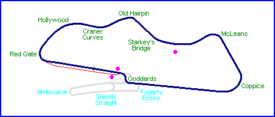
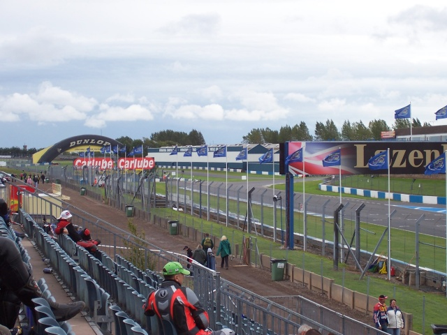
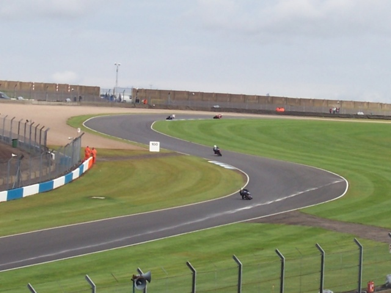

Pitlane from small covered grandstand
Donington, United Kingdom
Photographs Taken: 18 September 2004

Dots on the map indicate the location of were the photographs were taken.
Pitlane from small covered grandstand

Goddards and begining of Pitlane from infield uncovered grandstand

McLeans from infield banking
Return to racingcircuits.net's Photo Archive Main Index
©2004 Andy Sharpe. Reproduced here with kind permission